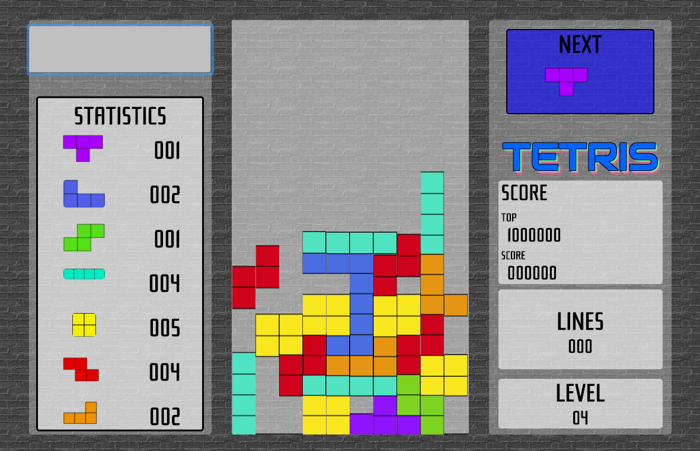
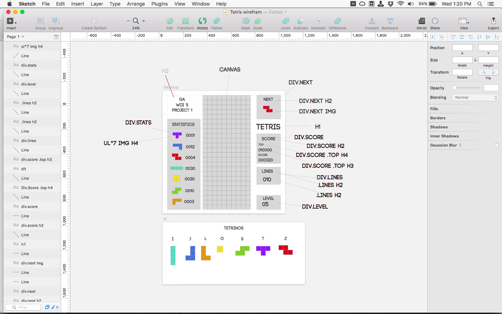
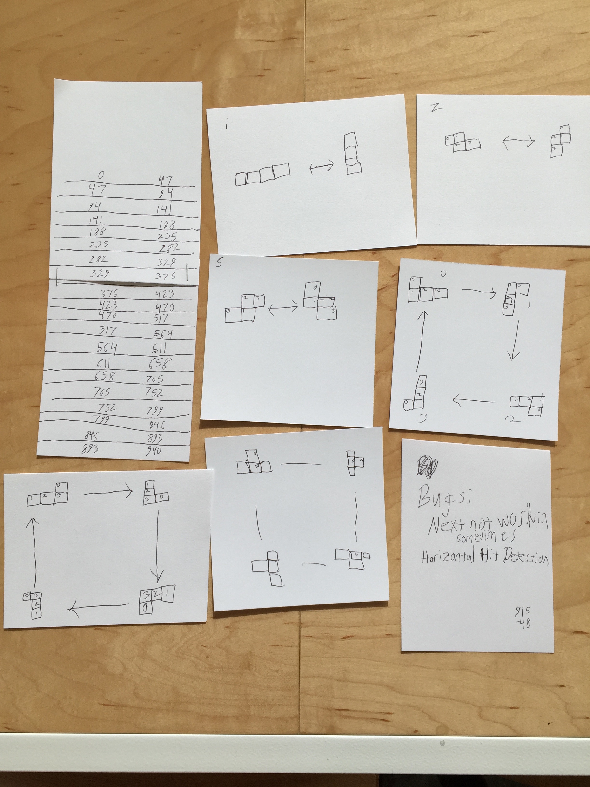
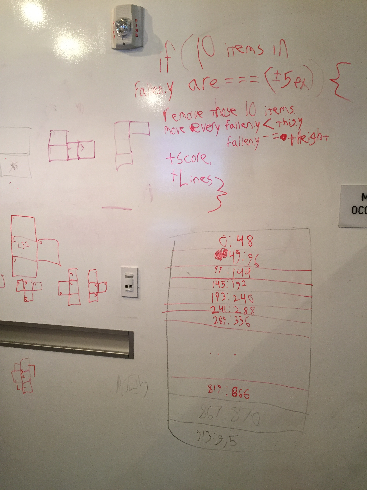
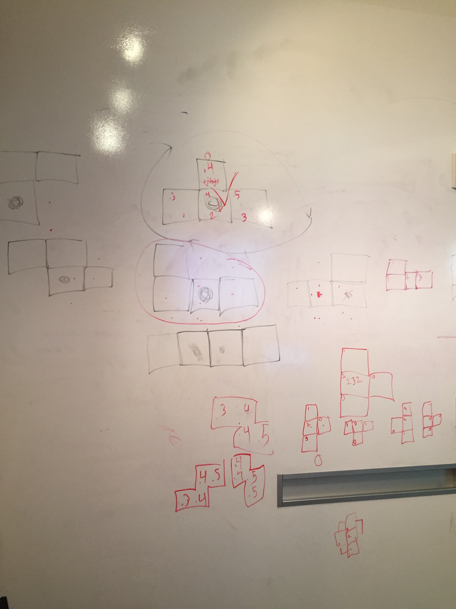

Trello
Tetris Wikipedia Article


for (var j = 0; j < shapes.length; j++) {
for (var i = 0; i < fallen.length; i++)
vs.
for (var i = 0; i < fallen.length; i++) {
for (var j = 0; j < shapes.length; j++) {
Result: Speed quadruples every time a new tetrino is made
var myState = canvas;
myState.interval = 33 / 2;
function drawing() {
draw(canvas);
}
setInterval(drawing, myState.interval);
Every second, the canvas erases and redraws everything 60 times. Required me to consider how movement and animation works. (Shoutout to the Animation Thunder Talk)
switch (tetrino[0].color) {
case "#9013FE": //tBlock
switch (true) {
case (Math.ceil(tetrino[0].x - tetrino[2].x) === 1 ||
Math.ceil(tetrino[0].x - tetrino[2].x) === 0) &&
Math.ceil(tetrino[0].y - tetrino[2].y) === Math.ceil(tHeight):
tetrino[0].x += left;
tetrino[0].y += up;
tetrino[1].x += left;
tetrino[1].y += down;
tetrino[3].x += right;
tetrino[3].y += up;
break;
Since each of the 4 blocks are written independant of one another, I used multiple switch statements to detect which tetrino was dropping, which rotation it was in, and provide instructions for it to turn clockwise. In total, I had to determine the type and orientation of 18 different combinations of tetrino.